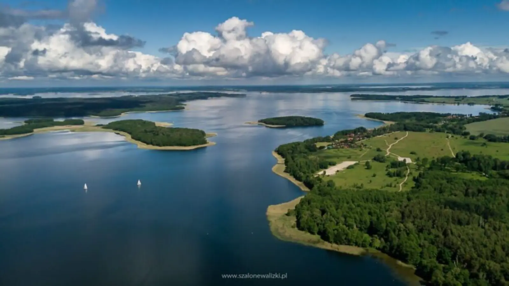

ARTYKUŁ • 30 września 2026
Mazury bez żagli — 5 pomysłów dla nie-żeglarzy
Mazury to nie tylko żagle i jachty. Sprawdź, co można robić na Mazurach, jeśli nie lubisz żeglować — a mimo to chcesz poczuć klimat regionu.

Mazury kojarzą się głównie z żeglarstwem — i słusznie, bo to jedno z najpiękniejszych miejsc w Europie do uprawiania tego sportu. Ale Mazury to znacznie więcej niż żagle. Oto 5 pomysłów dla tych, którzy wolą spokojniejsze formy wypoczynku.
1. Kajaki
Kajaki to najlepszy sposób, żeby poznać Mazury bez żagli. Rzeki — Czarna Hańcza, Krutynia, Pisa — są spokojne, czyste i otoczone lasami. Można płynąć cały dzień i nie spotkać żywej duszy.
2. Rower
Mazury to raj dla rowerzystów. Trasy są dobrze oznakowane, prowadzą przez wsie, jeziora i lasy. Można przejechać cały region — od Giżycka po Ełk — i zobaczyć najpiękniejsze zakątki.
3. Mazurskie wsie
Warto zwiedzić małe wsie mazurskie — Mikołajki, Ryn, Mrągowo. Drewniane chaty, stare kościoły, lokalne karczmy z mazurską kuchnią. To kraina, w której czas płynie wolniej.
4. Kąpiel w jeziorach
Jeziora mazurskie są czyste i ciepłe — idealne do kąpieli. Warto znaleźć małą, niezatłoczoną plażę i po prostu odpoczywać nad wodą, słuchając szumu trzcin i śpiewu ptaków.
5. Rejs statkiem
Jeśli chcesz poczuć Mazury z wody, ale nie masz ochoty na żeglowanie, wybierz rejs statkiem pasażerskim. Trasy z Giżycka, Mikołajek i Węgorzewa prowadzą przez najpiękniejsze jeziora — Śniardwy, Mamry, Niegocin.
Gdzie spać?
Zamiast popularnych kurortów, warto wybrać agroturystykę na wsi. Mazurskie gospodarstwa oferują nie tylko nocleg, ale i domowe jedzenie, lokalne produkty i prawdziwą gościnność.